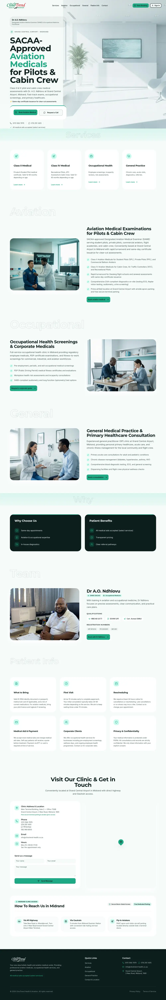
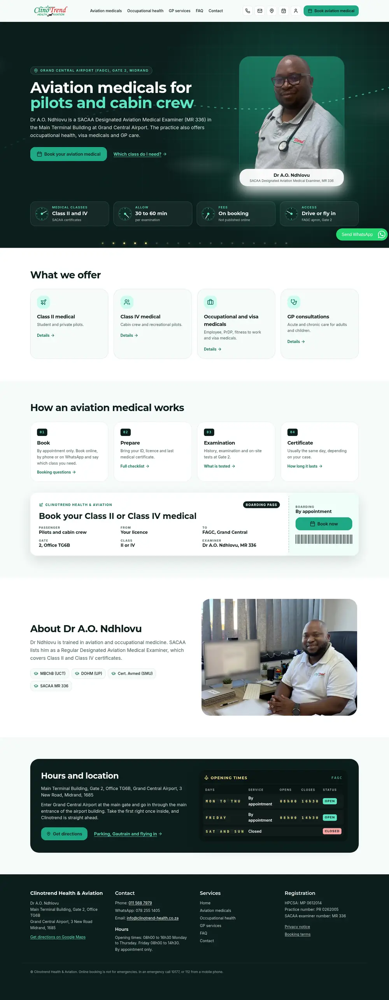
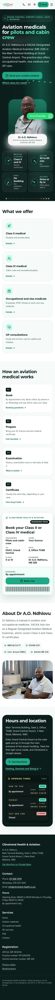
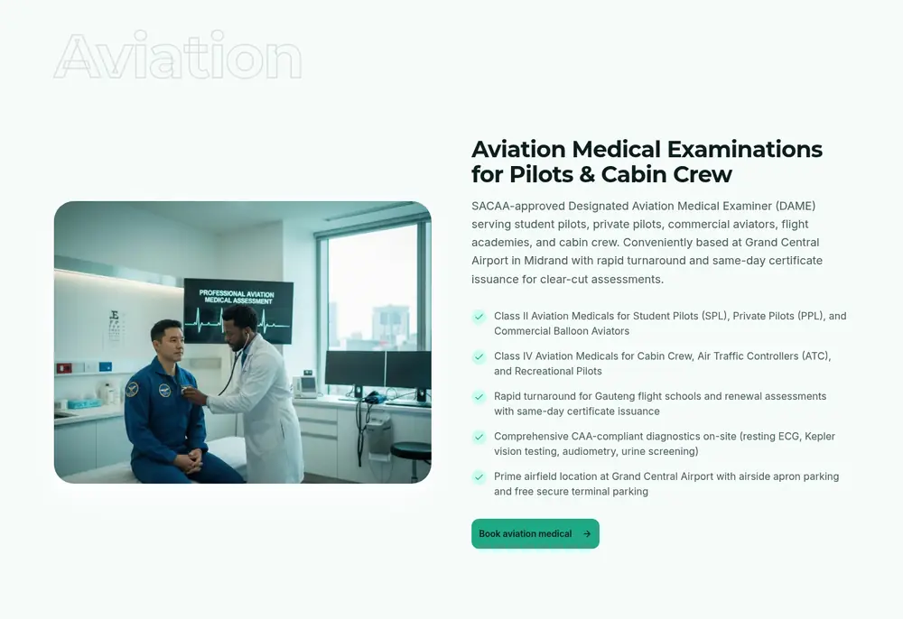
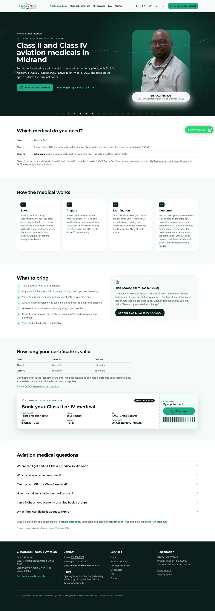
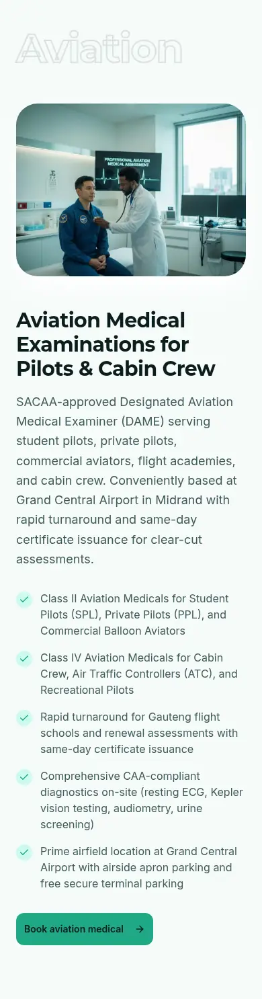
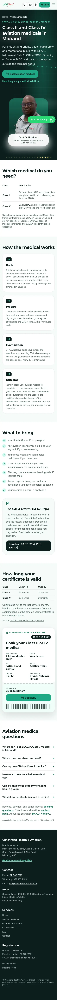
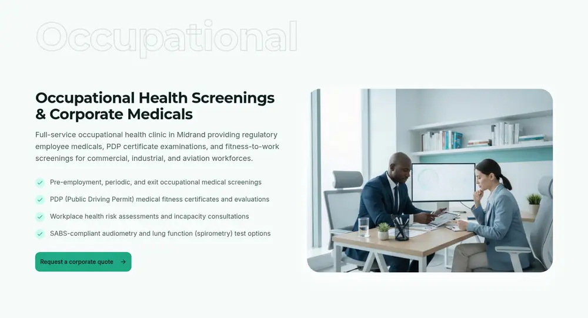
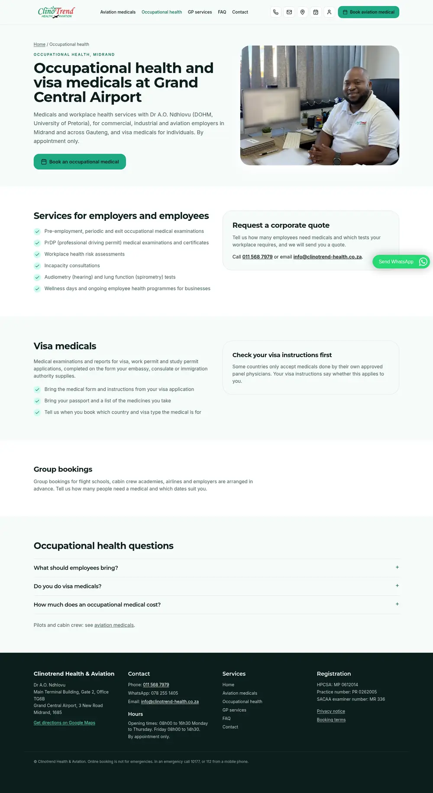
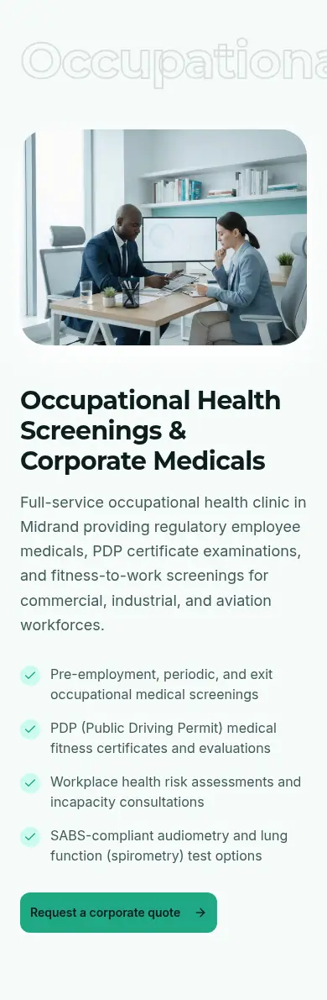
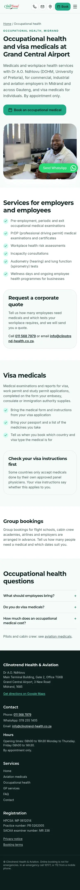
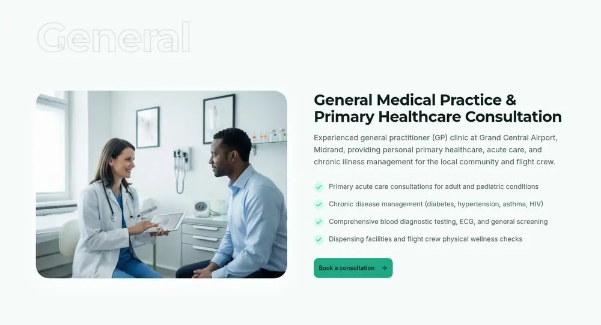
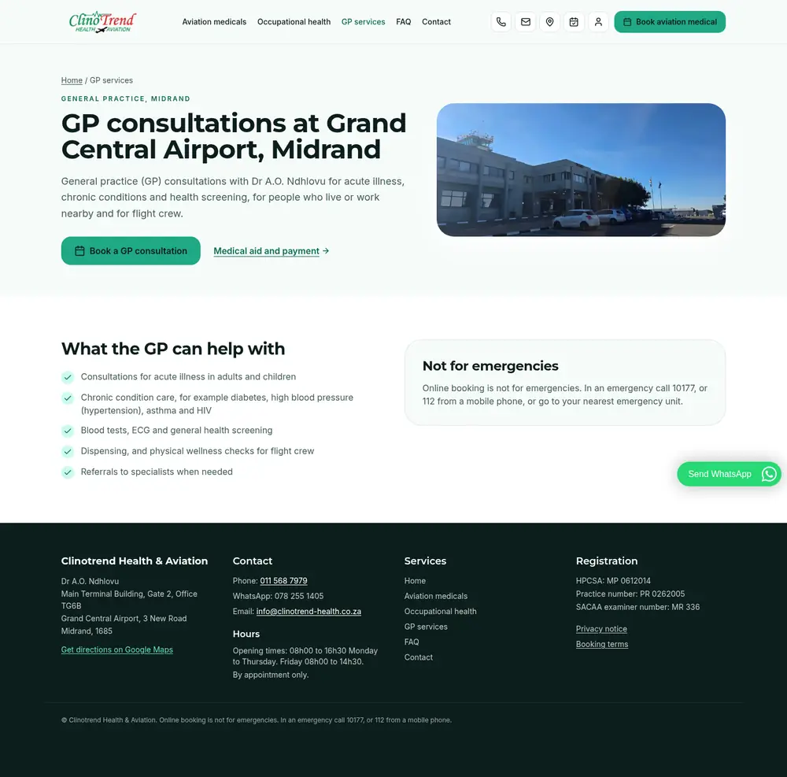
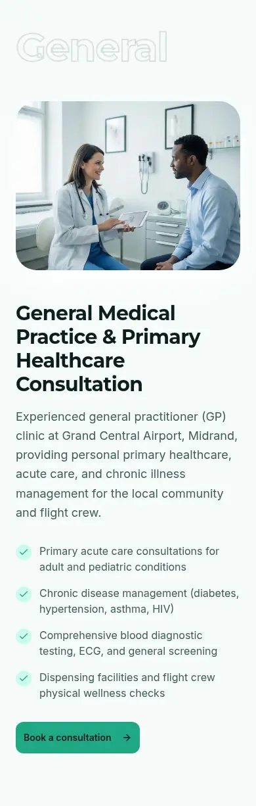
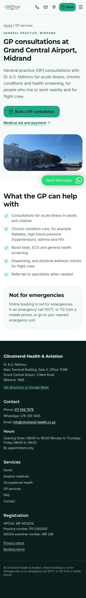
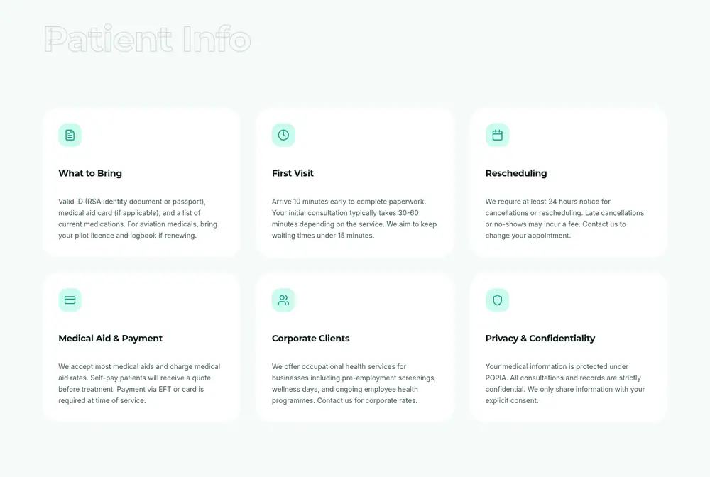
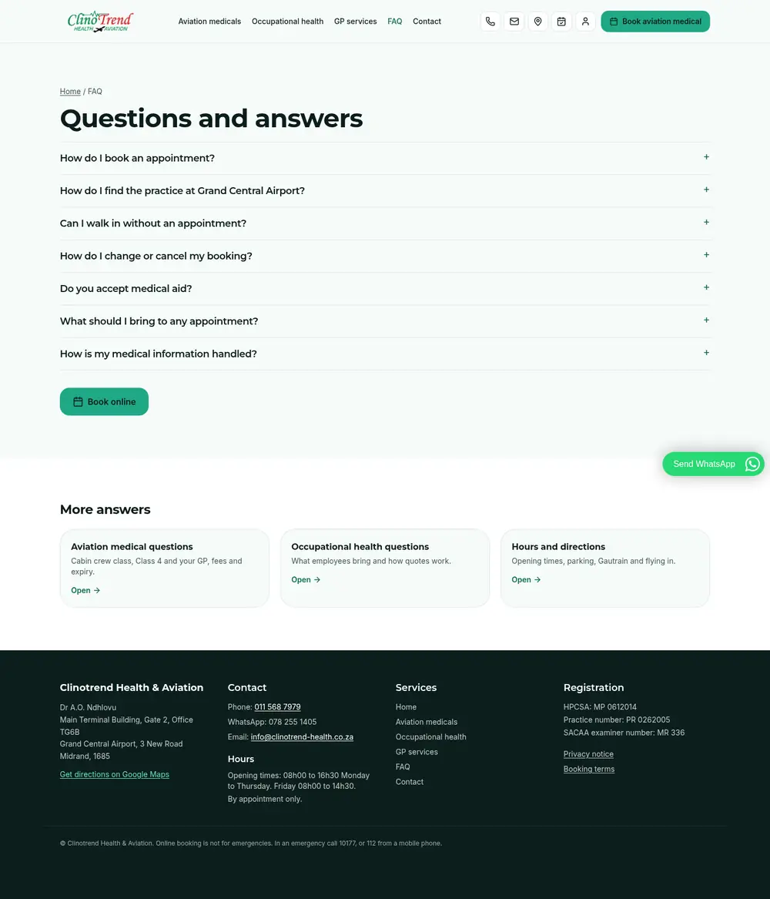
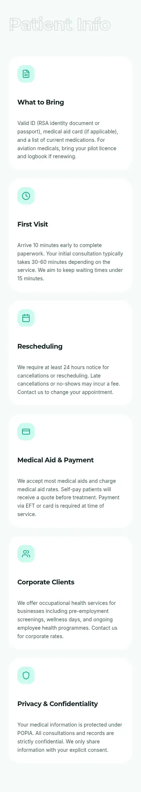
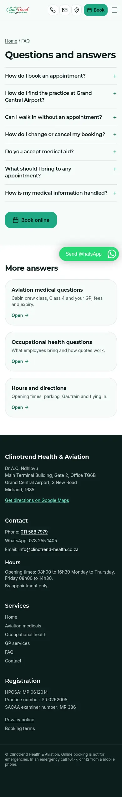
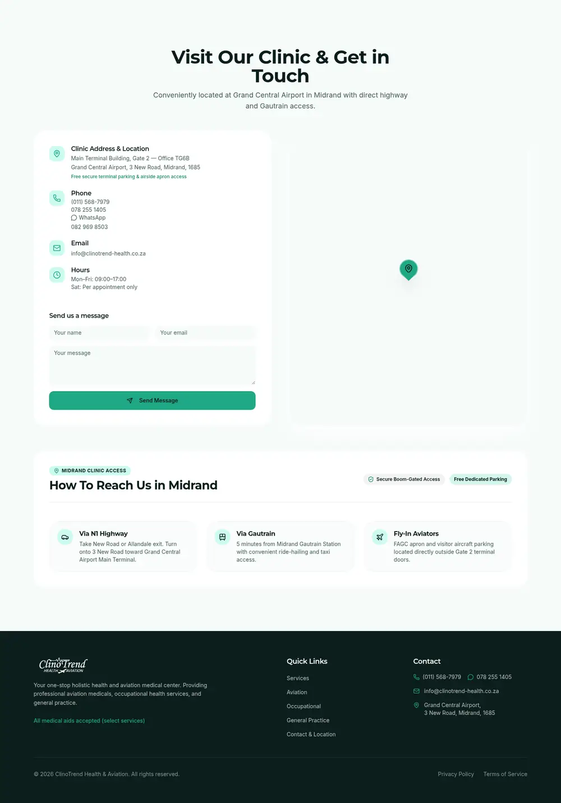
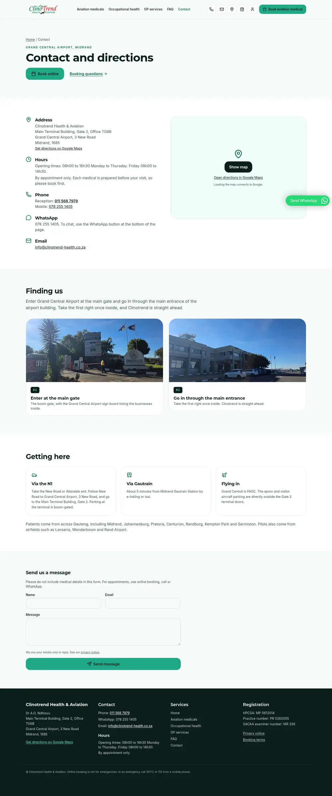
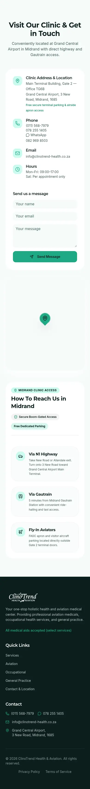
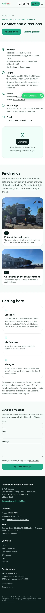
No screenshot of the current Google listing exists: Google Maps could not be opened from our server, and Manager access was not used to capture it. These facts come from public place data (audit, 22 Oct 2026). Description, services and photos were not captured.
| Name | Clinotrend Health and Aviation: Dr A.O.Ndhlovu Designated Aviation Medical Examiner |
|---|---|
| Category | Medical Center |
| Address | Grand Central Airport, Main Terminal Building, 3 New Rd, Glen Austin AH, 1685 |
| Hours | Mon to Fri 8 AM to 5 PM |
| Phones | +27 11 568 7979, additional 078 205 1405 (typo) |
| Description | Not captured |
| Services | Not captured |
| Photos | Not captured |
| Posts | None found |
| Reviews | 0 |
| Pin | -25.98926, 28.140795 |
| Name | ClinoTrend Health & Aviation (real world name; keywords in the name risk a suspension) |
|---|---|
| Category | Medical clinic, plus Occupational medical physician, General practitioner, Doctor |
| Address | Grand Central Airport, 3 New Road, Main Terminal Building, Gate 2, Office TG6B, Midrand, 1685 |
| Hours | Mon to Thu 08:00 to 16:30, Fri 08:00 to 14:30, Sat and Sun closed |
| Phones | 011 568 7979, WhatsApp 078 255 1405 |
| Description | 737 character factual description with directions |
| Services | 11 services incl. Class II, Class IV, cabin crew, on-site tests, occupational, visa, travel clinic, GP |
| Photos | Logo, cover, services image, desk photo, main gate, main entrance |
| Posts | 2 a week, first 4 weeks written |
| Reviews | Review requests after each visit |
| Pin | One pin used everywhere (to confirm on site) |
Overview
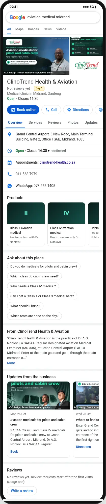
Services
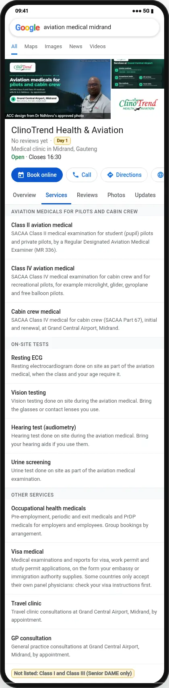
Photos
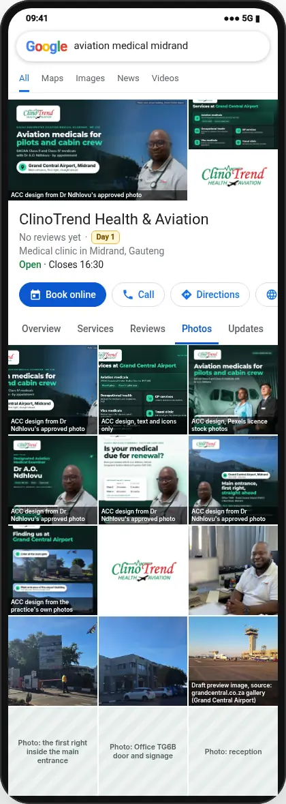
About and details
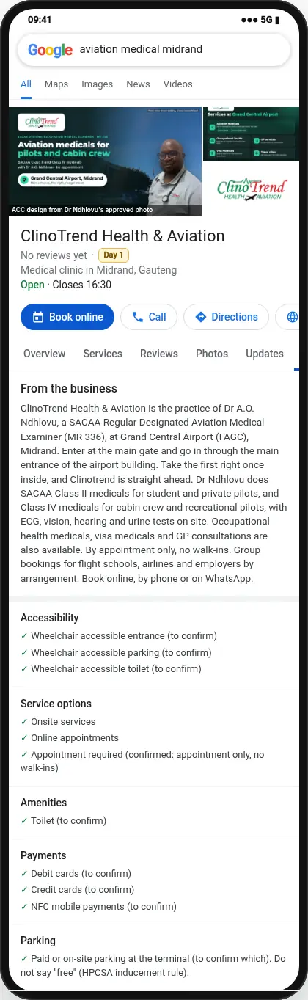
Verdict: the new site is better than the live one, with a few things to check
On content, SEO, speed, accessibility and compliance the new build is clearly ahead. Bookings, the contact form and the staff area use the same backend as live, unchanged. A few things work differently and must be checked right after upload. Nothing a patient can do on the live site is missing, apart from the small items listed under "Differences".
Better
- Pages: 8 public pages (home, aviation, occupational and visa, GP, FAQ, contact, privacy, terms) vs 1 page. Each is real HTML Google and AI assistants can read; the live page is an empty shell until JavaScript runs.
- SEO: 8 URLs in the sitemap (live: 1), page titles and descriptions per page, FAQ and clinic schema, llms.txt, a real 404 (live returns the home page for any URL), JPG share image (live: SVG most apps cannot show), fake Google place ID removed. Search Console verification tag kept.
- Speed (Lighthouse, same local server for both): mobile performance 75 vs 62, desktop 98 vs 88, page weight about 0.7 MB vs 6.4 MB (live loads a 5.5 MB cockpit photo). Main JavaScript 90 KB vs 157 KB compressed.
- Accessibility: Lighthouse 100 vs 93 (mobile) and 100 vs 95 (desktop). Best practices 100 vs 96.
- Analytics: GA4 (G-VX7D0YXXM0) with booking, call and booking-button events. Live sends to "AW-CLINOTREND", a placeholder that is not a real account, so the live site records nothing.
- Accuracy and HPCSA: class scope follows SACAA, no guarantees or superiority claims, one set of confirmed hours, only 011 568 7979 and WhatsApp 078 255 1405, privacy notice and booking terms are real pages (live footer links did nothing).
- Content added: visa medicals, group bookings, appointment only, directions with own photos, what to bring checklist, validity by age, 16 visible FAQ answers across the FAQ, aviation and occupational pages.
- Photos: the doctor's approved photos and the practice's own location photos instead of AI and stock images.
Same as live
- Online booking: same form fields and the same request to /api/create-booking on clinotrend.vercel.app (Neon database), checked line by line against the live JavaScript. Availability, View booking (check and change a booking) and confirmation emails use the same functions.
- Contact form: same /api/send-email function.
- Staff sign in and admin dashboard: /admin/ with bookings, availability, patients, reports, users, using the same API.
- Services: aviation Class II and IV, occupational health, GP, all with the same scope (wording made accurate).
- Testimonials: none on either site.
- IV drip lounge: not shown on live (hidden earlier at the clinic's request) and not on the new site.
Differences to know (removed on purpose)
- "Same-day appointments", "Fast-track", "Rapid turnaround", "Results in 24-48 hours", "Free secure parking", "All medical aids accepted", "Why Choose Us": removed for HPCSA rules.
- ATC under Class IV, "Commercial Balloon Aviators", "SACAA-Approved": corrected to SACAA's wording.
- 082 969 8503 removed (Dr Ndhlovu: only 011 568 7979 and 078 255 1405 are public). Saturday by appointment removed (closed on weekends).
- Keywords meta tag and the AW-CLINOTREND placeholder removed (neither did anything).
- "Request a Call" button not carried over (the contact form and call buttons cover it).
- Old one-page links such as /#aviation and /#contact now open the matching new page (fixed today).
Still open before or right after upload
- WhatsApp: new site uses the tochat.be bubble only. Check it opens a chat with 078 255 1405 (set in the tochat.be dashboard).
- Staff area: the admin code comes from the developer handover. The live site was rebuilt on 5 Sep, after the handover, and its admin files could not be fetched, so admin changes made after the handover (if any) cannot be confirmed. Sign in to /admin/ straight after upload and check bookings show.
- Test booking: make one test booking after upload and cancel it in /admin/.
- Payment methods (live: EFT or card, medical aid rates) are not on the new site yet: confirm with Dr Ndhlovu.
- Server files: the live server could not be reached from our side, so its real file list and .htaccess are unknown. Back up public_html first (checklist).
How "live" was captured: our server cannot reach clinotrend-health.co.za (connection fails), so the live side is the live site's own files (index.html, JavaScript and CSS fetched through public validators on 22 Oct 2026, last deployed 5 Sep 2026) run locally, with images from the developer handover whose sizes match the live files. It shows the live design and text as deployed; anything changed on the server after 22 Oct would not show. Lighthouse ran on both builds on the same local server, without compression, so absolute numbers differ from the real host; the comparison is like for like.